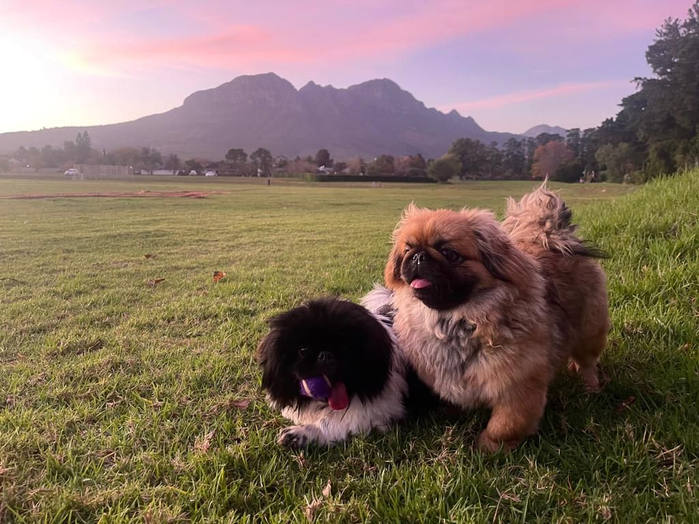

Our story began in 2014, in the city of Roses, Bloemfontein, when Grey and Paul Roos had their yearly school matches. Chanique hosted De Wet and some friends at her house. The two of them became instant friends, and the friendship grew until the year 2020. After chatting for a while every day, De Wet decided to drive from his family farm in the Karoo to visit Chanique in Bloemfontein.
And this is where it all began...On the 3rd of June 2020, De Wet asked Chanique to be his girlfriend, and, of course, she said yes. They moved to Cape Town, and this is where the love story began. The two were inseparable. In 2021, they welcomed a new addition to the family, Boshi Gnocchi Steenkamp. Later in 2022, they welcomed Hailey Steenkamp. The two of them have settled down in Somerset-West and are preparing for the wedding as we speak.
Earlier this year, De Wet, Chanique, and his family traveled to Turkey, where De Wet popped the big question, under all the hot air balloons in the world. She said YES, and the choice was made to make this love last a lifetime. Friends and family from all over are invited to come and join them for their special day to celebrate their love. We can’t wait to see you all soon.